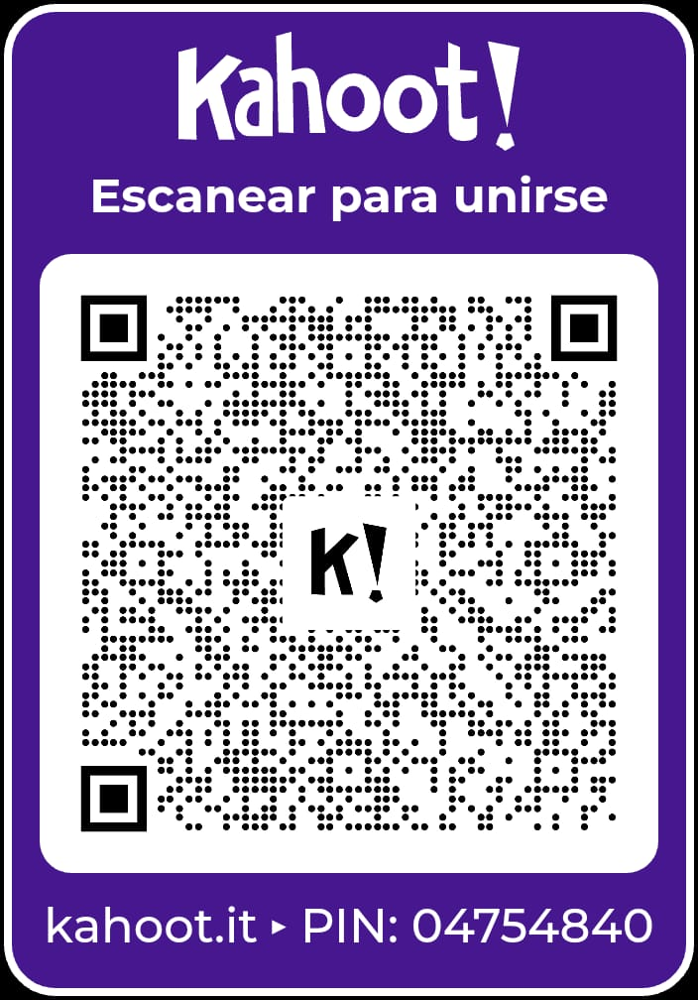
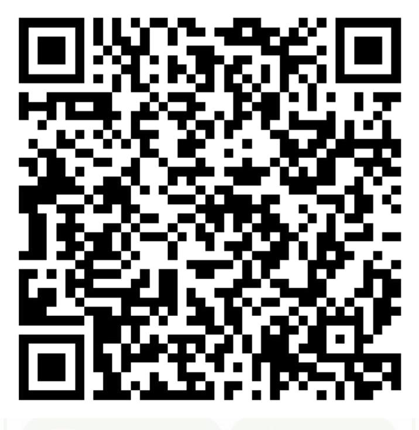

Cultura general del programador: historia de la computación, grandes personajes del software y curiosidades geek. Demuestra que no solo sabes escribir código, sino que conoces sus orígenes.

🔗 Ir a KahootCrucigrama interactivo con preguntas sobre programacion y logica. Pon a prueba tu conocimiento mientras resuelves cada palabra.
🔗 Ir al CrucigramaEducaplay es una plataforma que permite crear y jugar actividades educativas como mapas, adivinanzas y crucigramas. Perfecto para aprender jugando.

🔗 Ir a Educaplay